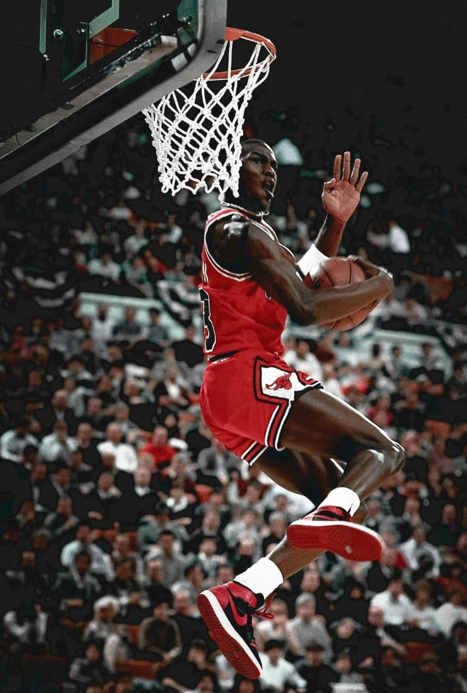

Michael Jordan firma contrato de exclusividad con la marca Nike, en ese entonces Jordan no era mas que una posible futura estrella
que acababa de sumarse a los Chicago Bulls. Donde Nike aposto sus fichas en el y decidieron crear las Air Jordan en conjunto de color
rojo y negro. En ese emtonces, la NBA no permitia que un jugador usara zapatillas de colores, ya que en ese momento solo se utilizaban
calzados blancos por la politica de la Liga de los Estados Unidos, donde por cada partido que Jordan utilizara las Air Jordan, Nike
seria multado. Ambos aceptaron las consecuencias y decidieron seguir para adelante, en su primer temporada en los Bulls fue seleccionado
como el "Novato del año" gracias a su gran capacidad, con un promedio de 28.2 puntos por partido. En marzo del 1985 salieron a la venta
las Air Jordan para todo publico, y al terminar el año, Nike habia vendido la cantidad de 100 millones de dolares, y desde ese momento
Nike y Jordan trabajan en conjunto.
Air Jordan I

Primer modelo creado por Nike para Jordan "El color del diablo", dijo Jordan al verlas